A JORNADA DE KRATOS
GOD OF
WAR
De Esparta aos Nove Reinos. Descubra a saga épica de vingança, redenção e o laço
entre pai e filho que desafiou os deuses.
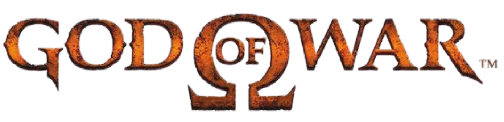
Kratos é um guerreiro espartano atormentado pelo passado, após ter sido manipulado por Ares a matar sua própria família. Em busca de redenção, ele passa a servir os deuses do Olimpo, cumprindo tarefas brutais na esperança de se libertar da culpa. Sua missão final é derrotar Ares, que ameaça destruir Atenas. Durante sua jornada, Kratos enfrenta monstros, armadilhas e desafios até encontrar a Caixa de Pandora, única arma capaz de derrotar um deus. Após conquistá-la, ele encara Ares em uma batalha devastadora. No final, Kratos vence e mata o deus da guerra. Mesmo assim, não encontra paz. Ao tentar tirar a própria vida, é impedido por Atena, que o recompensa tornando-o o novo Deus da Guerra, marcando o início de um destino ainda mais sombrio.
VILÕES PRINCIPAIS

O DEUS DA GUERRA
Ares
Brutal e manipulador, Ares espalha caos usando Kratos como arma de destruição. Sua sede por poder o leva a enfrentar o Fantasma de Esparta, selando seu destino.

DEUSA DA SABEDORIA
Athena
Athena, filha de Zeus, guia Kratos em sua jornada contra Ares, buscando restaurar o equilíbrio do Olimpo. Fria e calculista, usa a sabedoria como arma, manipulando eventos nas sombras para alcançar seus próprios objetivos.
ARSENAL DE GOD OF WAR I

Lâminas do Caos
Acorrentadas aos braços de Kratos por Ares como lembrete de seus pecados, as Lâminas do Caos ardem com fogo eterno. Representam o passado sombrio que Kratos nunca pode escapar.

Lâmina de Ártemis
Forjada pela deusa Ártemis e concedida a Kratos, a Lâmina de Ártemis é uma arma divina imbuída com o poder dos deuses. Seu golpe devastador consome a energia do portador, refletindo o sacrifício necessário para enfrentar inimigos colossais com poder absoluto.
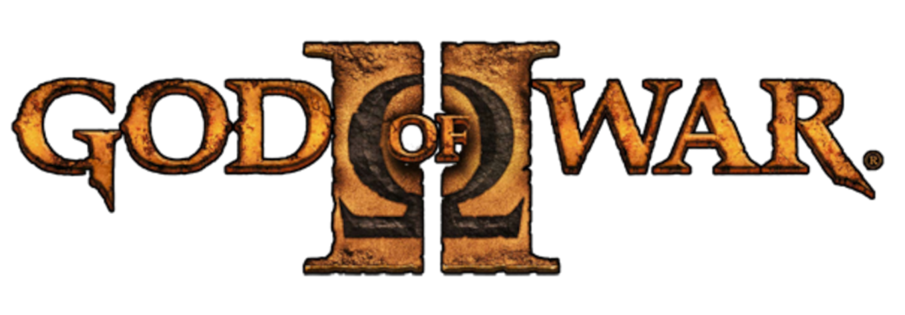
Agora como Deus da Guerra, Kratos se torna cada vez mais cruel, o que leva Zeus a traí-lo. Durante uma batalha, Zeus retira seus poderes e o mata com a Espada do Olimpo. No entanto, Kratos é salvo por Gaia, uma Titã. Os Titãs o resgatam porque também foram traídos por Zeus no passado e desejam vingança contra o Olimpo — eles veem em Kratos a oportunidade perfeita para derrubar os deuses. Guiado por esse propósito, Kratos parte em busca das Irmãs do Destino, entidades que controlam o fluxo do tempo e o destino de todos os seres. Elas tecem, medem e cortam o destino, decidindo o que deve acontecer e o que jamais pode ser alterado. Após enfrentar inúmeras provações, Kratos derrota as Irmãs e toma o controle do próprio destino, voltando no tempo para o momento em que Zeus o traiu. No final, ele confronta Zeus, descobre que ele é seu pai e, com os Titãs ao seu lado, inicia uma marcha rumo ao Olimpo para destruir os deuses.
VILÕES PRINCIPAIS

O REI DO OLIMPO
Zeus
Soberano dos deuses, Zeus governa com poder absoluto, empunhando o raio para impor sua vontade. Temendo uma antiga profecia, entra em conflito direto com Kratos pelo destino do Olimpo.
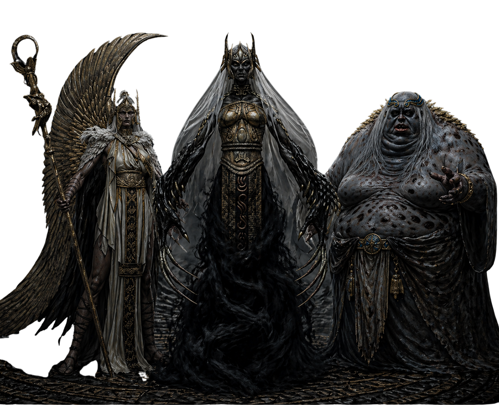
TECELÃS DO TEMPO
As Irmãs do Destino
Guardando o fluxo do tempo, as Irmãs do Destino controlam passado, presente e futuro com poder absoluto. Implacáveis e enigmáticas, manipulam os fios da existência para manter o equilíbrio — até que Kratos desafia seu domínio e rompe o próprio destino.
ARSENAL DE GOD OF WAR II
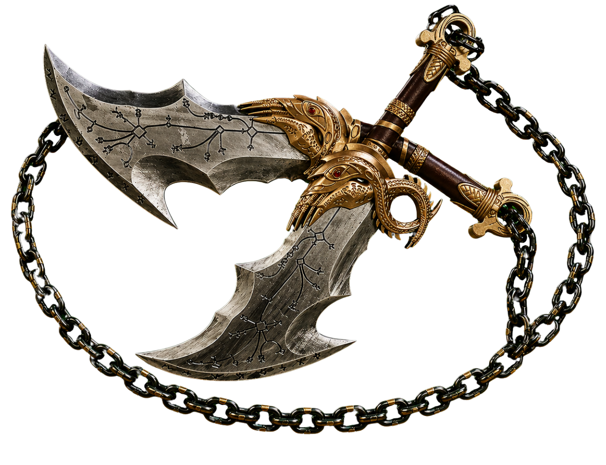
Lâminas de Athenas
Forjadas para substituir as Lâminas do Caos, as Lâminas de Atena mantêm o estilo brutal de Kratos, agora imbuídas com poder divino. Representam sua ligação direta com o Olimpo e sua ascensão como o novo Deus da Guerra.
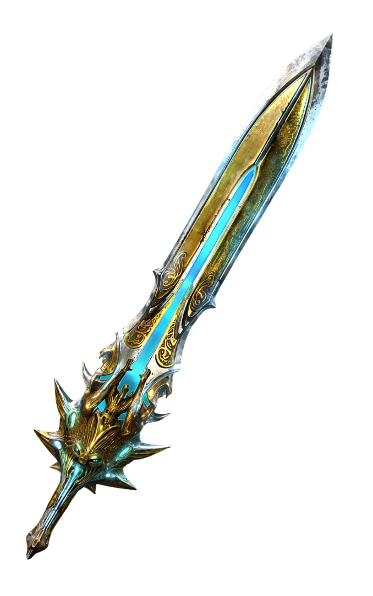
Lâmina do Olimpo
Criada por Zeus, a Lâmina do Olimpo concentra um poder imenso capaz de derrotar deuses e titãs. Símbolo de traição e destino, foi usada para retirar os poderes de Kratos e selar seu caminho de vingança.
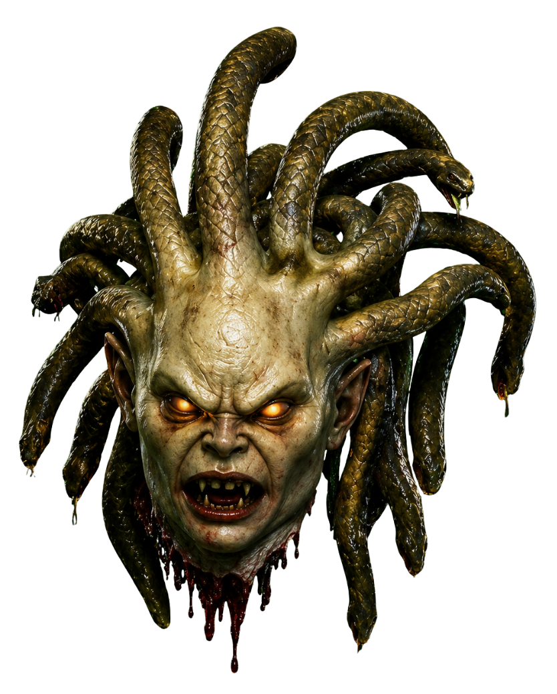
Cabeça de Euryale
Arrancada de uma das Górgonas, a cabeça de Euryale concede a Kratos o poder de petrificar inimigos. Mesmo após a morte, seu olhar carrega a maldição capaz de transformar tudo em pedra.
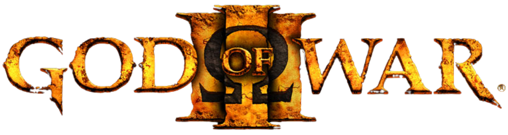
A guerra começa com Kratos e os Titãs atacando o Olimpo. Porém, durante a escalada, Gaia o trai e o abandona, pois percebe que Kratos não busca restaurar o mundo ou ajudar os Titãs — ele quer apenas vingança pessoal, tornando-se tão destrutivo quanto os próprios deuses. Kratos sobrevive e segue sozinho, eliminando diversos deuses e mergulhando o mundo no caos. Em sua jornada, ele descobre que o verdadeiro poder para derrotar Zeus não está apenas na força, mas na esperança, que estava selada dentro da Caixa de Pandora desde o primeiro jogo. No final, após derrotar Zeus, Kratos entende que a esperança havia sido liberada dentro dele quando abriu a caixa no passado. Em um ato final, ele usa a Espada do Olimpo contra si mesmo, liberando essa esperança para toda a humanidade, oferecendo ao mundo uma chance de recomeço após a destruição causada por sua vingança.
VILÕES PRINCIPAIS
O REI DO OLIMPO
Zeus
Soberano dos deuses, Zeus governa com poder absoluto, empunhando o raio para impor sua vontade. Temendo uma antiga profecia, entra em conflito direto com Kratos pelo destino do Olimpo.
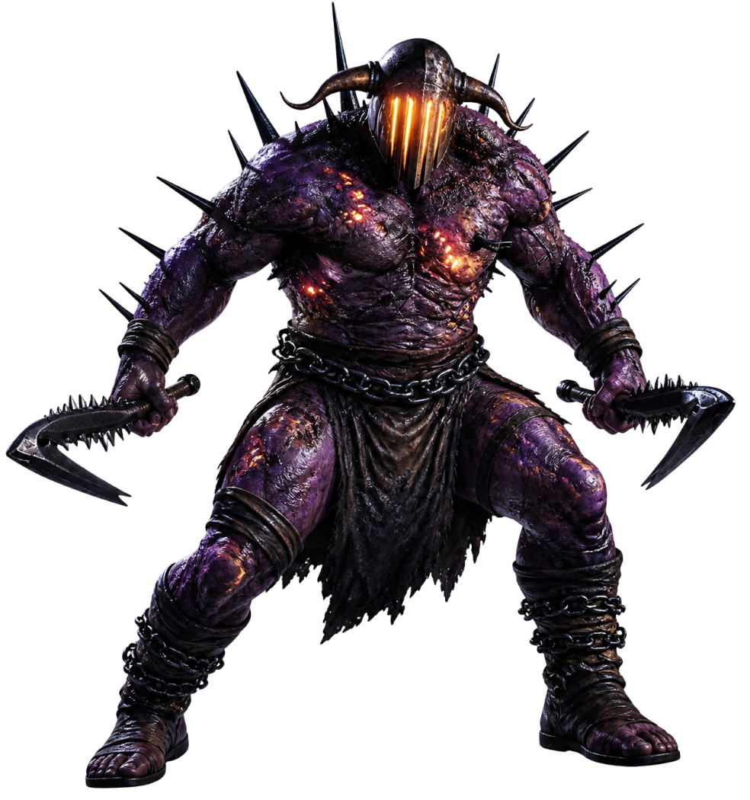
SENHOR DO SUBMUNDO
Hades
Regente das profundezas, Hades domina as almas dos mortos com crueldade implacável. Alimentado pelo ódio contra Kratos, busca vingança pela queda de sua família e pelo colapso do equilíbrio do submundo.
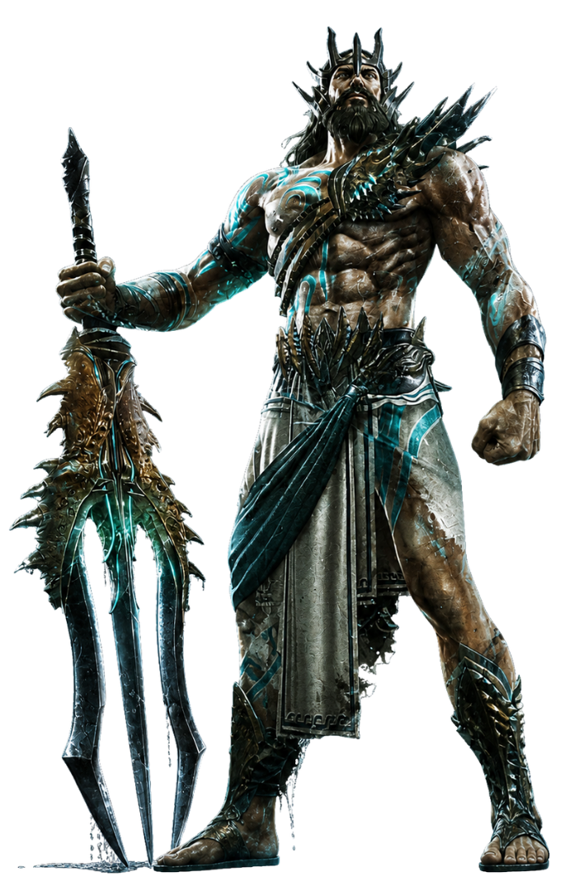
SENHOR DOS MARES
Poseidon
Dominador dos oceanos, Poseidon canaliza a fúria das águas para proteger o Olimpo. Fiel a Zeus, enfrenta Kratos com força devastadora, transformando o mar em uma arma viva contra seus inimigos.
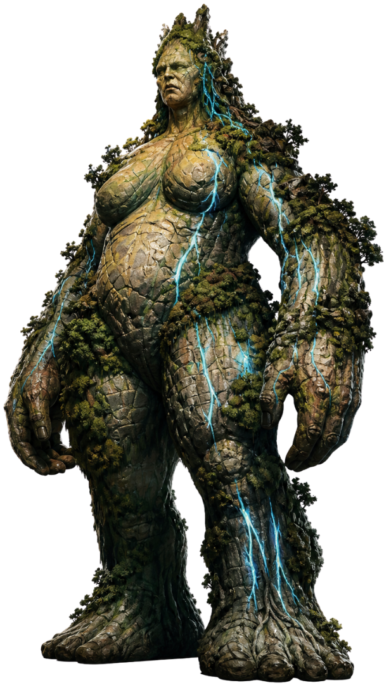
MÃE PRIMORDIA DOS TITÃS
Gaia
Fonte da própria vida, Gaia ergue-se como a essência da Terra e líder dos Titãs. Manipulando destinos nas sombras, alia-se a Kratos para destruir o Olimpo, visando restaurar a era dos antigos deuses.
ARSENAL DE GOD OF WAR II
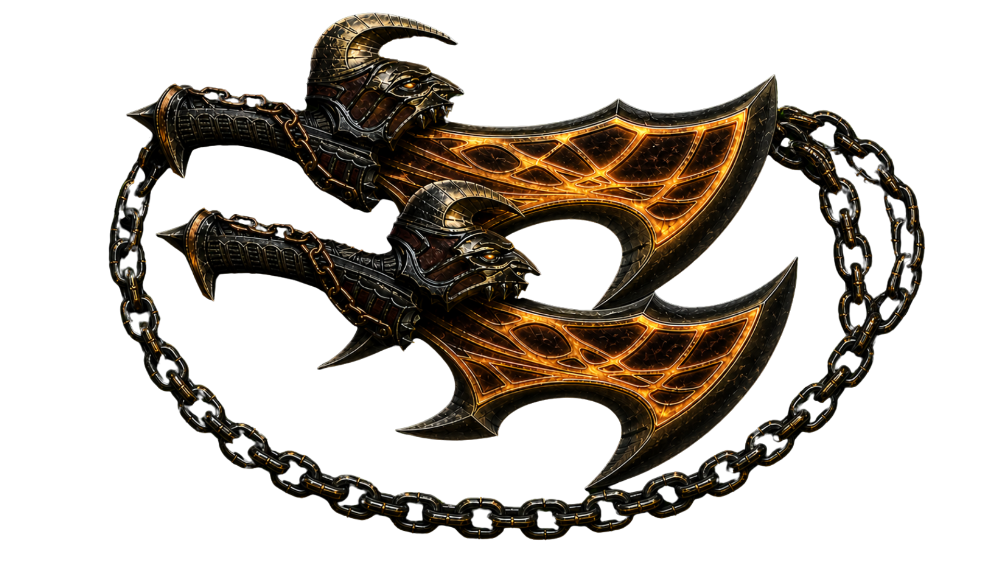
Lâminas do Exílio
Forjadas por Athena após a traição de Zeus, as Lâminas do Exílio elevam o poder de Kratos a um novo nível. Imbuídas com energia divina, ampliam sua força e simbolizam sua jornada final contra o Olimpo e seu destino.
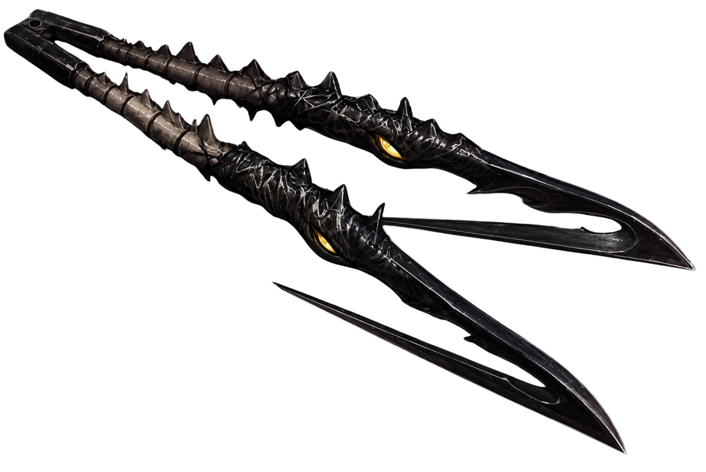
Garras de Hades
Forjadas nas profundezas do Submundo, as Garras de Hades carregam o poder das almas condenadas. Capazes de capturar e arrancar espíritos dos inimigos. E, nas mãos de Kratos, tornam-se instrumentos de tormento e destruição implacável.
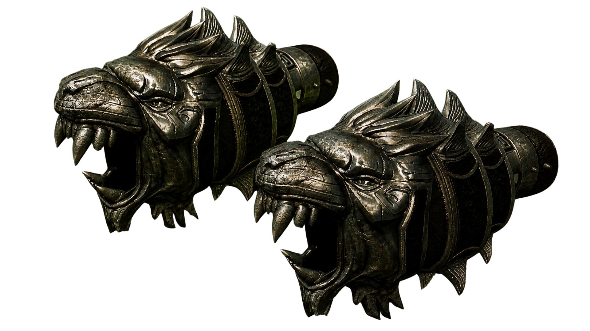
Cestus de Nemeia
Forjados a partir da força do Leão de Nemeia, os Cestus canalizam um poder bruto e devastador. Cada golpe carrega o peso de uma criatura impenetrável, transformando Kratos em uma força imparável de destruição física.
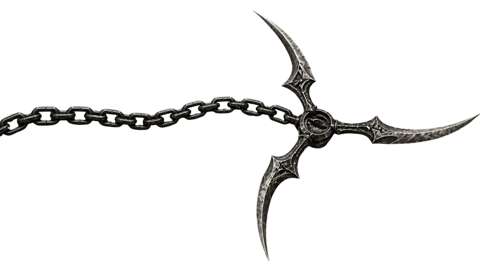
Chicote de Nêmesis
Forjado com a fúria dos deuses, o Chicote de Nêmesis canaliza energia elétrica em golpes rápidos e devastadores. Seus ataques combinam alcance e agilidade, permitindo a Kratos dilacerar inimigos enquanto descarrega poder divino em cada estalo.
Kratos vive agora na mitologia nórdica ao lado de seu filho Atreus. Após a morte da mãe do garoto, eles partem para espalhar suas cinzas no topo da montanha mais alta. Durante a jornada, enfrentam criaturas e deuses, incluindo Baldur. Baldur não é movido apenas por vingança: ele foi amaldiçoado por sua mãe, Freya, com uma magia que o torna invulnerável — mas também incapaz de sentir qualquer coisa, como dor, prazer ou emoção. Isso o leva à loucura, fazendo com que ele busque desesperadamente quebrar essa maldição, mesmo que isso signifique confrontar e matar quem estiver no caminho. Ao longo da jornada, Atreus descobre que é um deus e que seu nome verdadeiro é Loki. Em Jotunheim, eles encontram murais que revelam uma profecia: a jornada deles já estava prevista, e Loki teria um papel central em eventos futuros, incluindo grandes mudanças nos reinos. No final, eles cumprem o desejo da mãe e fortalecem sua relação, enquanto Kratos percebe que não pode fugir de quem é, mas pode escolher ser diferente.
VILÕES PRINCIPAIS
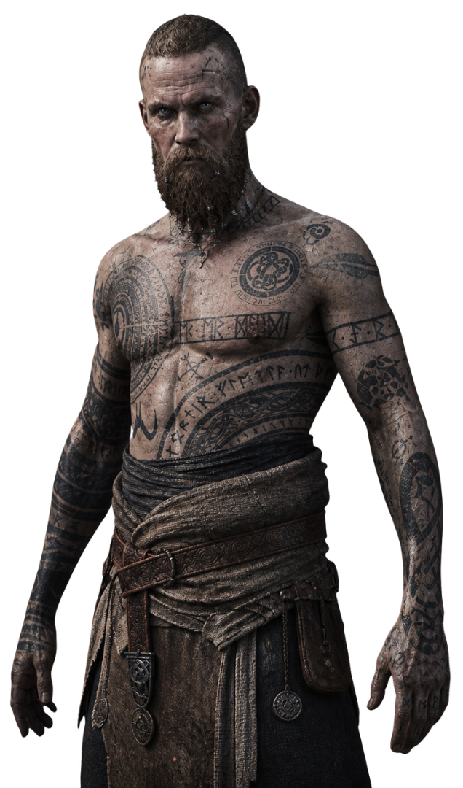
O IMORTAL
Baldur
Filho de Odin, Baldur é amaldiçoado com a invulnerabilidade, incapaz de sentir dor ou prazer. Consumido pela frustração e loucura, vê em Kratos uma chance de quebrar sua maldição, mergulhando em um confronto brutal movido por raiva e desespero.
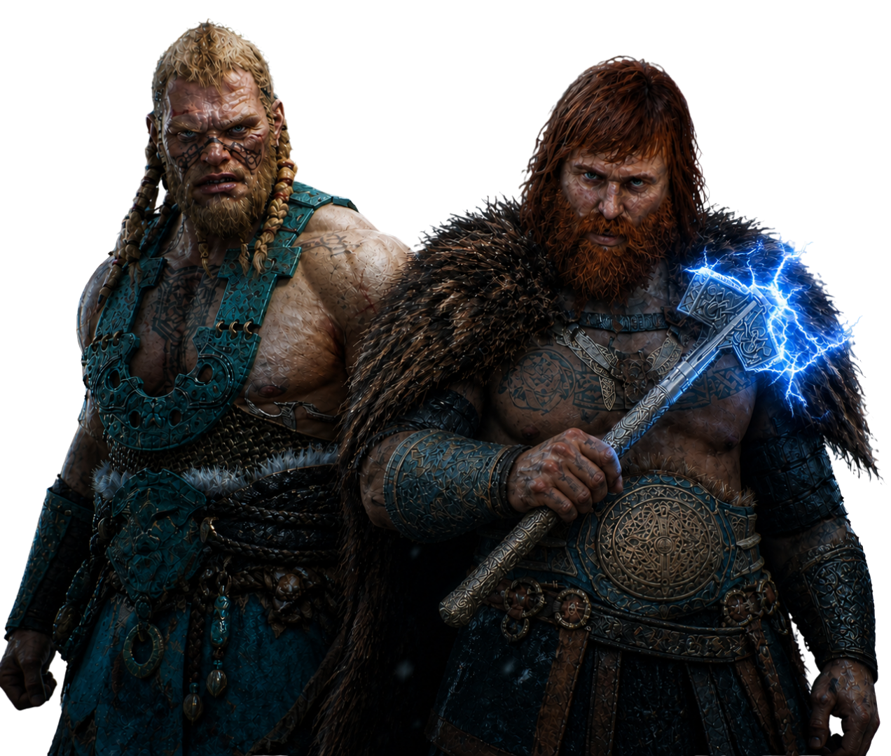
FILHOS DO TROVÃO
Magni e Modi
Filhos de Thor, Magni e Modi carregam a força e a fúria do trovão em batalha. Magni luta com brutalidade, enquanto Modi canaliza ataques elétricos com agressividade. Unidos pelo orgulho, enfrentam Kratos e Atreus como uma dupla implacável.
ARSENAL DE GOD OF WAR I

Leviatã
Forjado pelos irmãos Brok e Sindri, o Machado Leviatã foi criado para rivalizar com o Mjölnir de Thor. Imbuído com o poder do gelo, retorna à mão de seu portador quando arremessado.
Lâminas do Caos
Acorrentadas aos braços de Kratos por Ares como lembrete de seus pecados, as Lâminas do Caos ardem com fogo eterno. Representam o passado sombrio que Kratos nunca pode escapar.
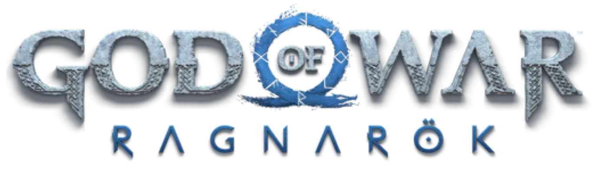
A história se passa durante a aproximação do Ragnarök, um evento profetizado na mitologia nórdica que representa o fim do mundo — uma grande guerra entre deuses, gigantes e outras forças, que levará à destruição de reinos inteiros e ao renascimento de um novo mundo. Kratos tenta evitar esse destino, enquanto Atreus busca entender seu papel como Loki dentro dessa profecia. Eles entram em conflito com Odin e Thor, que manipulam os acontecimentos para manter o controle e evitar sua própria queda. Ao longo da jornada, Atreus amadurece e passa a tomar decisões próprias, enquanto Kratos enfrenta o medo de repetir seus erros do passado. No final, o Ragnarök acontece com uma batalha massiva que resulta na destruição de Asgard e na queda de Odin. Porém, diferente do passado, Kratos escolhe agir com sabedoria e não apenas vingança. Ele encontra redenção, enquanto Atreus segue seu próprio caminho, cumprindo seu destino de forma diferente do que foi previsto.
VILÕES PRINCIPAIS

O PAI DE TODOS
Odin
O Pai de Todos. Manipulador, obsessivo e perigoso. Odin busca conhecimento acima de tudo, e destruirá qualquer um que ameace seu controle sobre os Nove Reinos.

O DEUS DO TROVÃO
Thor
Portador do Mjölnir e filho de Odin. Diferente das lendas heroicas, o Thor de God of War é brutal, alcoólatra e assombrado por seus próprios demônios, um reflexo sombrio de Kratos.
ARSENAL DE GOD OF WAR RAGNARÖK
Leviatã
Forjado pelos irmãos Brok e Sindri, o Machado Leviatã foi criado para rivalizar com o Mjölnir de Thor. Imbuído com o poder do gelo, retorna à mão de seu portador quando arremessado.
Lâminas do Caos
Acorrentadas aos braços de Kratos por Ares como lembrete de seus pecados, as Lâminas do Caos ardem com fogo eterno. Representam o passado sombrio que Kratos nunca pode escapar.

Lança Draupnir
Forjada do anel mágico Draupnir e entregue a Kratos por Brok e Sindri, a Lança Draupnir se multiplica ao ser lançada. Refletindo a nova forma de lutar de Kratos, não mais com fúria cega, mas com precisão e propósito.